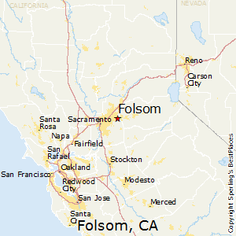

City of Folsom , CA
Distinctive by Nature!
Folsom is a city in Sacramento County, California, United States. It is commonly known for Folsom Prison, the song "Folsom Prison Blues" as well as for Folsom Lake. The population was 72,203 at the 2010 census. The median home price in Folsom is $624,000 with the average household income at $102,692.
Folsom is part of the Sacramento−Arden-Arcade−Roseville Metropolitan Statistical Area.
Incorporated: April 20, 1946
Elevation: 220 ft
Current Estimated Population: 81,328
Top Employer: Intel Corporation, 16.85% of city employment
Bike trails: 32 miles
July Avg. High Temp: 94
January Avg. Low Temp: 38
Folsom ranks No. 1 in list of best places to raise a family in California
By WalletHub
WalletHub produced a list of the best places to raise a family in California for 2016 and some Sacramento cities are rated at the top.
Released Tuesday, three of the top 10 and five of the top 25 cities on the list of 240 are from the Sacramento area. Folsom ranked the highest, landing the number one spot on the list. Total scores and ranks of Sacramento cities in the top 50:
- (1) Folsom - 75.31
- (8) El Dorado Hills - 70.63
- (9) Roseville - 70.63
- (15) Elk Grove - 67.18
- (18) Rocklin - 65.80
- (43) Fair Oaks - 61.26
Every city on this list is compiled by WalletHub's analysts rating and examining 21 key different metrics for four main criteria's on an 100-point scale.
Those four criteria's are Affordability, Socioeconomic Environment, Family Life & Fun and Education, Health & Safety-- each being worth 25 points.
In the four sections metrics like attractions, playgrounds per capita, median family income and other were compared.
WalletHub's sources to gather this information varied from the U.S. Census Bureau, Bureau of Labor Statistics and many more.
For a look at the full list click here.
Upcomming Events:
March 27: Drive Through Easter Bunny Photos
April 07: First-time Homebuyers WEBINAR
April 09: Dont Let Your Budget Fool You- Workshop
April 13: CHAMBER ribbon cutting- Anytime Fitness
April 27: CHAMBER Highway 50 Corridor Power Lunch